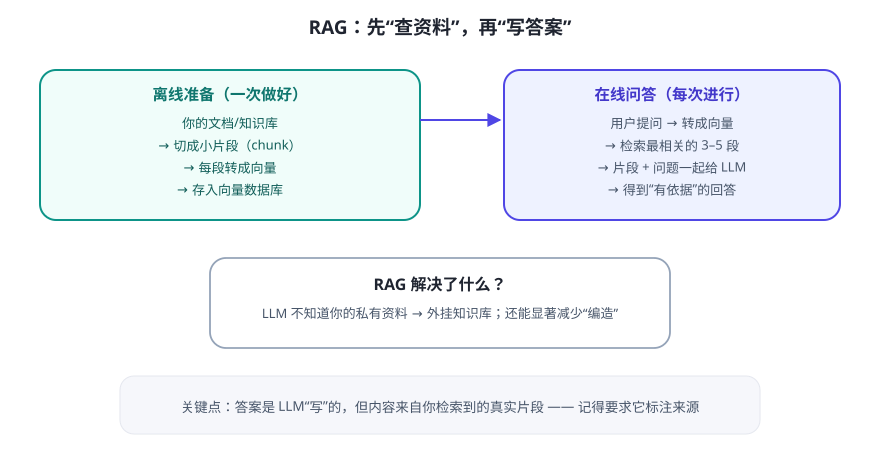

LLM 的训练数据是“截止到某个时间的公开互联网”，它天生不知道你的私有文档，也不该被塞进模型里。RAG 的思路很朴素：每次回答前，先去你的资料库里“查资料”，把查到的东西放进上下文，再让模型写答案。
RAG 全流程

四个关键细节（决定效果好坏的都在这里）
- 切块（Chunking）：文档切成多大？太小缺上下文，太大噪音多。通常按“标题/段落”切，保留来源信息。经验值几百字一块，需按内容调。
- 向量化（Embedding）：把每块文字变成向量（Day 12 细讲）。选什么模型影响“懂不懂意思”。
- 检索（Retrieval）：取回 Top-K 相关块（如 3–5 块）。可加“关键词 + 向量”混合检索提高命中。
- 生成（Generation）：把“检索到的资料 + 用户问题 + 指令（只能依据资料回答，注明来源）”一起给 LLM。
RAG vs 微调（Finetune），别再搞混
| RAG（检索增强） | 微调（更新模型） | |
|---|---|---|
| 本质 | 回答时外挂查资料 | 改变模型本身的权重/行为 |
| 适合 | 资料常更新、要求可追溯、有私有文档 | 固定风格/格式/领域术语，需要“内化” |
| 成本/门槛 | 较低，随时可改资料 | 较高，需训练与评估 |
| 改资料 | 重传/重索引即可 | 要重新训练 |
💡 结论：90% 的“让 Agent 懂我的资料”需求，先用 RAG；微调是后面才考虑的事。
常见疑问
Q：RAG 能完全消除幻觉吗？
A：不能，但能大幅减少。前提是资料里有答案；若资料里没有，模型仍可能硬答。对策：指令写“资料没有就直说不知道”，并让它标注来源。
A：不能，但能大幅减少。前提是资料里有答案；若资料里没有，模型仍可能硬答。对策：指令写“资料没有就直说不知道”，并让它标注来源。
Q：一定要向量数据库吗？
A：资料少（几百条以内）可以先全量塞或关键词检索；资料一多、要语义检索，就上向量库。先跑通再优化。
A：资料少（几百条以内）可以先全量塞或关键词检索；资料一多、要语义检索，就上向量库。先跑通再优化。
✍️ 今日练习（约 12 分钟）
- 画出你自己资料的 RAG 流程：输入 3 篇你常用的文档，标出“切块→向量→检索→生成”每一步。
- 找一个支持“上传文档问答”的工具，上传一份文档问 3 个细节问题，检查它答得对不对、有没有标来源。
- 思考：你的资料里哪类问题 RAG 能答好，哪类答不好？（答不好的往往是跨多篇综合推理的问题）
📌 今日小结
RAG先检索资料，再让 LLM 基于资料回答
全流程切块 → 向量化 → 检索 Top-K → 拼进上下文 → 生成（带来源）
对比微调资料常更新选 RAG；固定风格/内化知识才考虑微调
防幻觉资料没有就直说 + 强制标来源 + 程序侧校验
明天预告：RAG 的地基——Embedding 和向量数据库到底怎么“理解意思”？做一个小实验亲手感受。